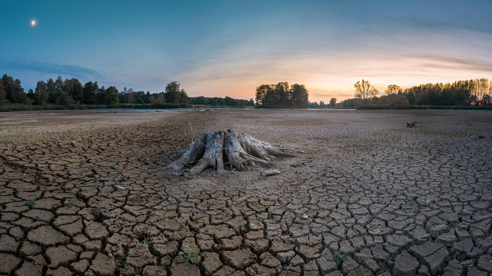

PRINCIPALES CRISIS MEDIO AMBIENTALES

Desaparición de fuentes hídricas
Esta afectación comienza por unas causas claras que dañan directamente estas fuentes
hídricas,
las cuales se dan por la falta de interés, negligencia gubernamental y el aumento de las
diferentes industrias mineras, agropecuarias, agrícolas, textiles y entre otras donde
aumentan
sus prácticas que propician la sobreexplotación de estas fuentes hídricas y la accesibilidad
a
estas de forma fácil donde se utilizan las más cercanas para su aprovechamiento y
extracción, ya
que en ocasiones es muy difícil y costoso el acceso. Cada sector busca un interés diferente
donde buscan un acceso rápido a las fuentes para cumplir con los propósitos y los objetivos
de
cada sector ya sea comercial, económico y social, en donde el pasar del tiempo empieza a
existir
unos principales sectores que crean y generan daño.

Contaminacion industrial
Se entiende por contaminación industrial a las emisiones de sustancias peligrosas que
proceden de
forma directa o indirecta de los procesos industriales y pasan al entorno natural.
¿Cómo afecta?
La industria emite cientos de contaminantes sólidos, del aire y el agua, que contribuyen
a la
formación de smog, la acumulación de metales pesados y la contaminación del agua por
sustancias
orgánicas, constituyen desechos sólidos peligrosos y dañan de muchas otras formas a las
comunidades y los ecosistemas.

Deforestación
La deforestación es la pérdida de bosques y selvas debido al impacto de actividades
humanas o
causas naturales.
Según el Informe Frentes de Deforestación 2021 del Fondo Mundial para la Naturaleza
(WWF), en
los últimos 13 años, más de 43 millones de hectáreas de bosque han sido devastadas, un
terreno
que equivale al tamaño del estado de California en Estados Unidos. Sin duda, estos datos
reflejan la acuciante necesidad de poner el foco en la protección de las zonas con más
riesgo de
sufrir estos efectos tan devastadores.
Sobreexplotación de los recursos naturales
La sobreexplotación es hacer uso, extracción o aprovechamiento de un recurso natural de forma
excesiva. En el caso de los recursos naturales renovables este uso excesivo se da sin la
posibilidad de renovación de dicho recurso. En el caso de recursos no renovables conduce
inevitablemente a su agotamiento.